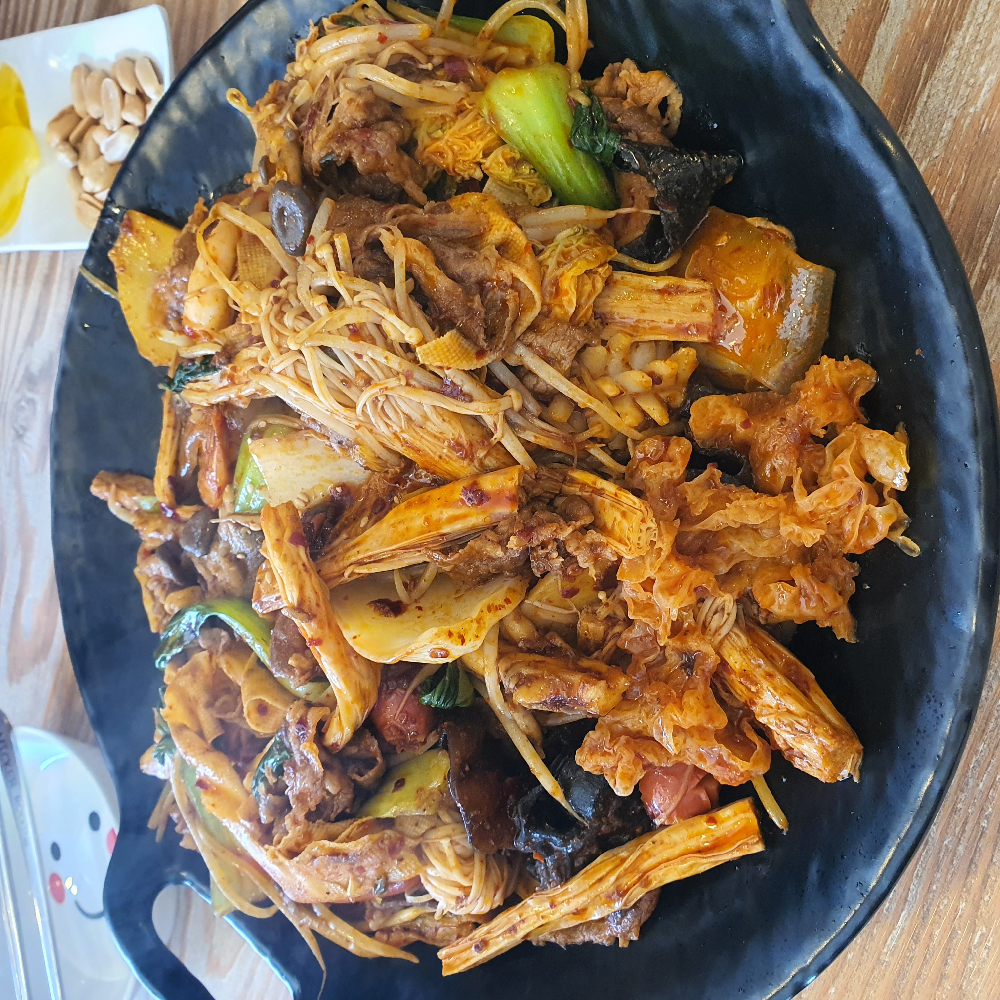
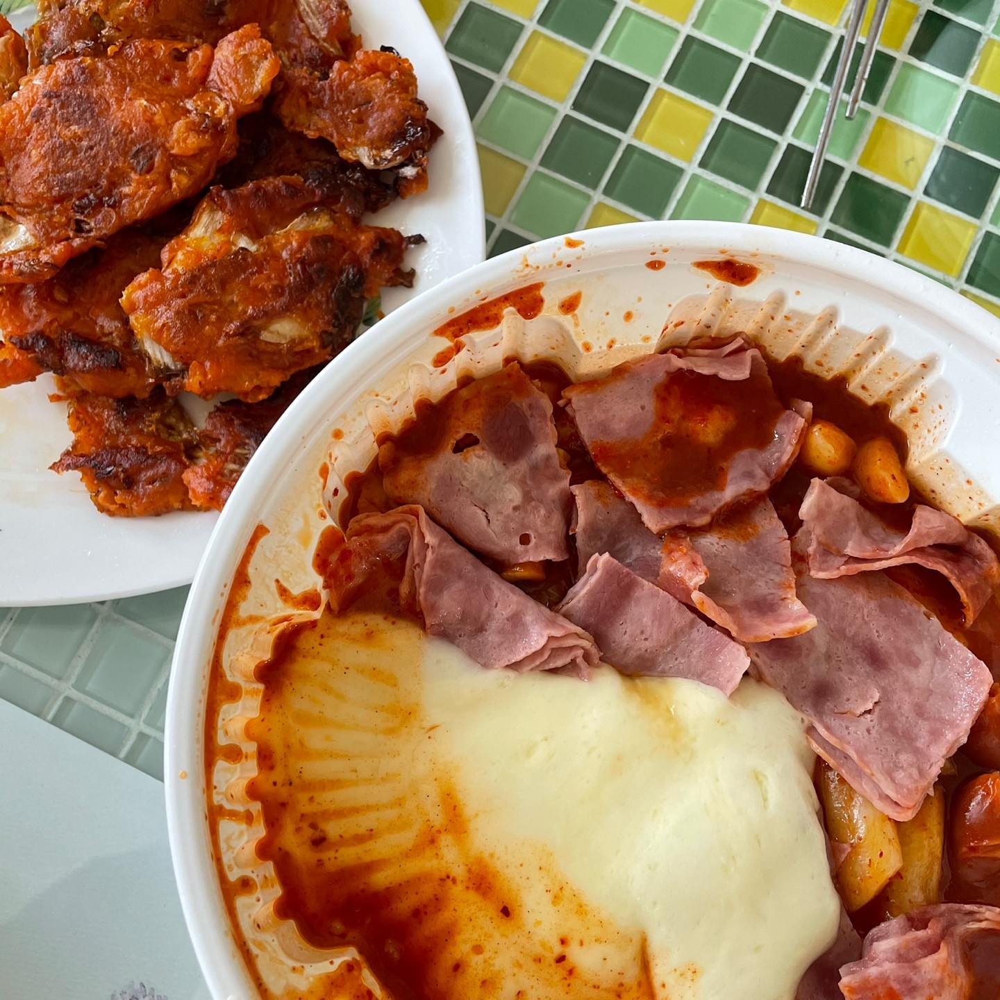
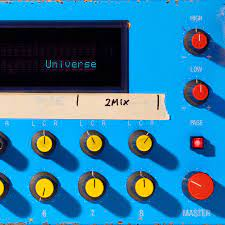

저를 소개합니다
좋아하는 음식
 <마라샹궈> <떡볶이>
좋아하는 가수

<스테이시>
요즘 꽂힌 노래
<Official髭男dism의 Universe>
나에 대해서
저는 좋아하는 것도 많고 하고 싶은 것도 많은 학생입니다.
취미시간에는 주로 게임을 즐기며 요즘엔 친구들과 맛집 찾아다니는 걸 좋아합니다.
이번 방학엔 공부, 우정, 휴식 삼박자를 맞춰가며 바쁘게 살아가고 싶습니다!!
나의 각오
전과도 하고 휴학도 하느라 이제야 이 과목을 들을 수 있게 된 만큼 열심히 공부하겠습니다!